4 Vorlesung 04: Zusammenhänge
Was sind Zusammenhänge?
- Ein Zusammenhang beschreibt zu welchem Grad zwei Variablen (Merkmale) systematisch miteinander in Verbindung stehen
- Zusammenhänge bilden die Essenz der psychologischen Forschung—durch sie versuchen wir die Mechanik der menschlichen Psyche zu verstehen:
- Fördert Ausdauersport das psychische Wohlbefinden?
- Helfen Psychotherapiestunden bei der Überwindung einer Depression?
- Wirkt sich Bildschirmzeit nachteilig auf die Schlafqualität aus?
- Steigt durch kindliche Frühförderung die Wahrscheinlichkeit für einen akadamischen Bildungsabschluss?
- Fast jede wissenschaftliche Hypothese lässt sich als Zusammenhang formuliern – selbst Unterschiede!
- Formulierung als Unterschied: unterscheiden sich Männer und Frauen in ihren verbalen Fähigkeiten?
- Formulierung als Zusammenhang: steht die kategorische Variable Geschlecht in Zusammenhang mit der metrischen Variable verbale Fähigkeiten?
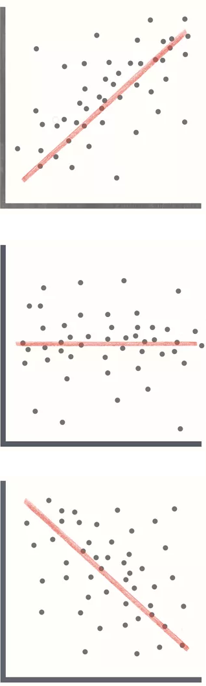
Zusammenhänge im engeren Sinn
- Um Unterschiede und Zusammenhänge voneinander abzugrenzen, verstehen wir nachfolgend Zusammenhänge in einem engeren Sinn:
 |
Ein Zusammenhang (im engeren Sinn) beschreibt zu welchem Grad die Variation zweier metrischer Variablen miteinander in Verbindung steht. |
- Durch die Eingrenzung auf metrische Variablen (diskret oder kontinuerlich) stellt etwa die Verbindung von Geschlecht und verbalen Fähigkeiten keinen Zusammenhang im engeren Sinn dar, da Geschlecht eine kategorische Variable ist.
- In den meisten Fällen sind Zusammenhänge das “schärfere statistische Schwert” als Unterschiede und es lohnt sich oft, Forschungsfragen entsprechend anzupassen:
- Unterscheidet sich die akademische Leistung von Rauchern und Nichtrauchern? ⇒ Zusammenhang Zahl der Zigaretten pro Tag und akademische Leistung
- Unterscheidet sich der Medienkonsum von Depressiven und Kontrollen? ⇒ Zusammenhang Depressivität und Medienkonsum
- Unterscheidet sich das Depressionsrisiko zwischen Nord- und Süddeutschland? ⇒ Zusammenhang geographischer Breitengrad und Depressionsrisiko
5 Kovarianz
Kovarianz
- Ziel: mathematische Größe, die zum Ausdruck bringt, wie stark die Variation zweier Variablen miteinander in Zusammenhang steht
- Wir haben bereits eine Größe für die Variation einer Variable — die Varianz:
\[ Var(X) = \frac{1}{N}\sum_{i=1}^N\big(x_i-\bar{X}\big)^2 = \frac{1}{N}\sum_{i=1}^N(x_i-\bar{X})\color{darkred}{(x_i-\bar{X})} \]
Die Varianz gibt an, wie stark eine Variable \(X\) um ihren Mittelwert \(\bar{X}\) schwankt
Analog berechnet die Kovarianz, wie stark die gemeinsame Schwankung zweier Variablen um ihren jeweiligen Mittelwert ist: \[ \text{Kovarianz:}\quad Cov(X,Y) = \frac{1}{N}\sum_{i=1}^N\big(x_i-\bar{X}\big)^2 = \frac{1}{N}\sum_{i=1}^N(x_i-\bar{X})\color{darkred}{(y_i-\bar{Y})} \]
Im Zentrum der Kovarianz steht die Erkenntnis, dass das mathematische Produkt zweier Abweichungsvariablen — hier die Abweichungen \((x_i-\bar{X})\) und \((y_i-\bar{Y})\) vom Mittelwert — angibt, wie stark die beiden Abweichungen gleichsinnig variieren (ko-variieren).
Kovarianz
Intuition:
Sind zwei zusammengehörige Datenpunkte \(x_i\) und \(y_i\) größer als der Mittelwert, sind sowohl \((x_i-\bar{X})\) als auch \((y_i-\bar{Y})\) positiv, und damit auch das Produkt \((x_i-\bar{X})(y_i-\bar{Y})\) positiv.
Sind zwei zusammengehörige Datenpunkte \(x_i\) und \(y_i\) geringer als der Mittelwert, sind sowohl \((x_i-\bar{X})\) als auch \((y_i-\bar{Y})\) negativ, und damit das Produkt \((x_i-\bar{X})(y_i-\bar{Y})\) wieder positiv.
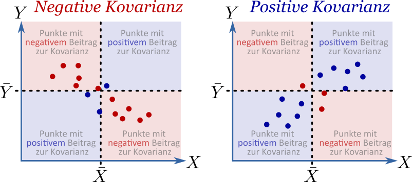
Kovarianz: Größe-Gewicht-Beispiel
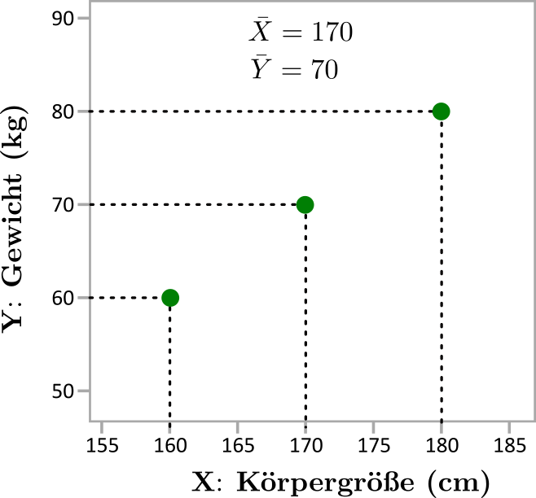
\[ \scriptsize{ \begin{aligned} &Cov(X, Y) = \frac{1}{N}\sum_{i=1}^N(x_i-\bar{X})(y_i-\bar{Y}) = \\ &= \frac{1}{3}\big[(160-170)(60-70)+(170-170)(70-70)+(180-170)(80-70)\big] = \\ &= \frac{1}{3}\big[(-10)\cdot (-10)+0\cdot 0+10\cdot 10\big] = \\ &= \frac{1}{3}\cdot 200 = 66{,}67 \end{aligned} } \]
- Problem: die Kovarianz hängt von den Einheiten ab!
- Wird im Beispiel die Körpergröße \(X\) in der Einheit Meter angegeben, so lautet die Kovarianz:
\[ \scriptsize{ \begin{aligned} Cov(X, Y) &= \frac{1}{3}\big[(1{,}60-1{,}70)(60-70)+(1{,}70-1{,}70)(70-70)+(1{,}80-1{,}70)(80-70)\big] = \\ &= \frac{1}{3}\big[(-0{,}10)\cdot (-10)+0\cdot 0+0{,}10\cdot 10\big] = \frac{1}{3}\cdot 2 = 0{,}667 \end{aligned} } \]
- Kovarianzen sind also nicht vergleichbar wenn sich Einheiten unterscheiden, und erst recht nicht, wenn sich die Variablen unterscheiden.
6 Pearson-Korrelation
Pearson-Korrelation
- Die Pearson-Korrelation schafft Abhilfe für das Problem der mangelnden Vergleichbarkeit
- Der Schlüssel: die Kovarianz wird mit der Standardabweichung beider Variablen normalisiert:
\[ \small{ \text{Korrelation:}\;\; r_{XY} = \frac{Cov(X,Y)}{s_X s_Y} = \frac{1}{N s_X s_Y}\sum_{i=1}^N(x_i-\bar{X})(y_i-\bar{Y}) } \]
- Durch das Teilen durch die Standardabweichungen \(s_X\) und \(s_Y\) werden die Einheiten herausgekürzt — die Korrelation ist also eine einheitslose Größe.
- Die Korrelation kann Werte zwischen \(-1\) (perfekter negativer Zusammenhang) und \(+1\) (perfekter positiver Zusammenhang) annehmen.
Warum ist die Korrelation auf −1 bis 1 beschränkt?

Darstellung der Korrelation nur mit (Ko)Varianzen:
\[ r_{XY} = \frac{Cov(X,Y)}{s_X s_Y} = \frac{Cov(X,Y)}{\sqrt{Var(X)} \sqrt{Var(Y)}} \]
Die Korrelation sollte maximal (\(r=1\)) sein, wenn \(X\) mit sich selbst korreliert wird (\(Y=X\)). Zu berücksichtigen ist, dass die Kovarianz von X mit sich selbst gleich der Varianz ist:
\[ r_{XX} = \frac{Cov(X,X)}{\sqrt{Var(X)} \sqrt{Var(X)}} = \frac{Var(X)}{\sqrt{Var(X)} \sqrt{Var(X)}} = \frac{Var(X)}{Var(X)} = 1 \]
Umgekehrt sollte die Korrelation maximal negativ sein (\(r=-1\)), wenn \(Y\) genau das Inverse von \(X\) ist, also \(Y=-X\). Unter Berücksichtigung von \(Var(X) = Var(-X)\) gilt: \[ r_{X(-X)} = \frac{Cov(X,-X)}{\sqrt{Var(X)} \sqrt{Var(-X)}} = \frac{-Cov(X,X)}{\sqrt{Var(X)} \sqrt{Var(X)}} = \frac{-Var(X)}{Var(X)} = -1 \]
Pearson-Korrelation: Größe-Gewicht-Beispiel
Wir hatten:
\[ \small{ \begin{aligned} &Cov(X, Y) = \frac{1}{N}\sum_{i=1}^N(x_i-\bar{X})(y_i-\bar{Y}) = \frac{200}{3} \end{aligned} } \]
Und berechnen nun die Korrelation \(\;\;r_{XY} = \frac{Cov(X,Y)}{s_X s_Y}\)
\(\scriptsize{s_X=\sqrt{\frac{1}{N}\sum_{i=1}^N\big(x_i-\bar{X}\big)^2}=\sqrt{\frac{1}{3}[(-10)^2+0^2+10^2]}=\sqrt{\frac{200}{3}}}\)
\(\scriptsize{s_Y=\sqrt{\frac{1}{N}\sum_{i=1}^N\big(y_i-\bar{Y}\big)^2}=\sqrt{\frac{1}{3}[(-10)^2+0^2+10^2]}=\sqrt{\frac{200}{3}}}\)
\[ \small{ r_{XY} = \frac{\frac{200}{3}}{\sqrt{\frac{200}{3}}\cdot\sqrt{\frac{200}{3}}}=1 } \]
- Wäre die Körpergröße in der Einheit Meter angeben, so kürzt sich der Faktor 100 (1m = 100cm) nicht nur im Zähler, sondern auch im Nenner:
\[ \small{ r_{XY} = \frac{\frac{2\color{darkred}{{,}}00}{3}}{\sqrt{\frac{2\color{darkred}{{,}}00}{3}}\cdot\sqrt{\frac{2\color{darkred}{{,}}00}{3}}}=1 } \]
Die Normalisierung mit der Standardabweichung sorgt somit dafür, dass die willkürliche Einheit keine Rolle spielt.
Interpretation der Pearson-Korrelation
- Die Pearson-Korrelation zeigt an, wie linear der Zusammenhang zweier Variablen ausgeprägt ist
- Die Pearson-Korrelation ist dabei nicht von der Steigung einer gedachten Gerade abhängig.
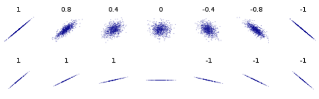
- Ein Zusammenhang zweier Variablen kann extrem schwach sein (z.B. so, dass eine Verdopplung von X nur einer 0.1%-Steigerung von Y entspricht) und dennoch kann die Korrelation stark sein (= nah an \(\pm 1\)), wenn die Punkte exakt auf einer Geraden liegen.
- Auf einen Satz gemünzt kann man sagen:
Die Pearson-Korrelation misst, wie gut bivariate Daten durch eine Gerade abgebildet werden können.
Voraussetzungen für das Berechnen der Pearson-Korrelation
- Die Pearson-Korrelation kann immer berechnet werden, solange beide Variablen aus Zahlenwerten bestehen.
- Es gibt jedoch weitere Kriterien, die für die Sinnhaftigkeit und Interpretierbarkeit der Pearson-Korrelation wichtig sind:
| Kriterium | Falls Kriterium nicht erfüllt? | Beispiel | Mögliche Abhilfe? |
|---|---|---|---|
| Daten haben mindestens Intervallskalenniveau | ▪ Keine Aussage über Linearität des untersuchten Zusammenhangs möglich ▪ Korrelation nicht interpretierbar |
Rangkorrelation | |
| Keine Ausreißer | Korrelationskoeffizient kann massiv verzerrt sein | 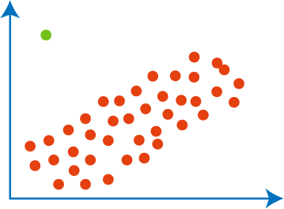 | Ausreißer entfernen oder Rangkorrelation |
| Zusammenhang der Daten wird nicht durch nicht-linearen Anteil dominiert | ▪ Pearson-Korrelation falsches Modell ▪ Linearität der Daten wird verzerrt wiedergegeben, da die Korrelation vom nicht-linearen Teil beeinflusst wird |
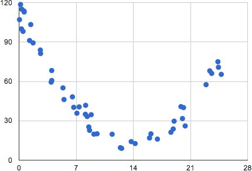 | Komplexeres Modell, das den nicht-linearen Anteil berücksichtigt |
Mythen zur Pearson-Korrelation
- In vielen Quellen finden sich darüber hinaus unzutreffende Behauptungen zur Verwendung der Pearson-Korrelation:
| Behauptung | Fact | |
|---|---|---|
| Mythos 1 | Die Variablen müssen kontinuierlich sein | Pearson-Korrelation ist valide für diskrete Daten, solange diese mindestens Intervallskalenniveau aufweisen. Tatsächlich gibt es sogar eine Variante der Pearson-Korrelation, bei der beide Variablen binär sind (Phi-Koeffizient). |
| Mythos 2 | Die beiden Variablen müssen normalverteilt sein. | Die beiden Variablen müssen nicht normalverteilt sein. Korrekt ist, dass die Daten für die Berechnung eines p-Wertes bivariat normalverteilt sein sollten. |
| Mythos 3 | Die Variablen müssen einen linearen Zusammenhang aufweisen | Gegenbeispiel: wenn Daten nur aus zufälligem Rauschen bestehen, sind sie hochgradig nicht-linear, aber dennoch gibt der Pearson-Koeffizient idR korrekterweise an, dass die Korrelation ungefähr 0 ist. Zusammenhänge in der Psychologie sind sehr selten eindeutig linear, dennoch kann es sinnvoll sein, die Pearson-Korrelation anzuwenden. Besser ist es daher zu sagen (wie in der Folie zuvor), dass der Zusammenhang nicht zu stark durch einen nicht-linearen Anteil dominiert werden sollten. |
| Mythos 4 | Die Variablen müssen varianzhomogen sein | Varianzhomogenität (auch Homoskedastizität) meint, dass Y-Werte ähnliche Varianz in verschiedenen Abschnitten der X-Achse haben und umgekehrt. Jedoch ist Varianzhomogenität keine zwingende Voraussetzung für die Anwendung der Pearson-Korrelation. Korrekt ist, dass der erhaltene Korrelationskoeffizient ungenauer und der p-Wert nicht mehr korrekt ist. |
Korrelationsmatrix
- Eine Korrelation bestimmt immer den Zusammenhang zwischen zwei Variablen
- Gibt es mehr als zwei Variablen (z.B. die “Big Five”), bietet sich eine Darstellung aller paarweisen Korrelationen an – die Korrelationsmatrix
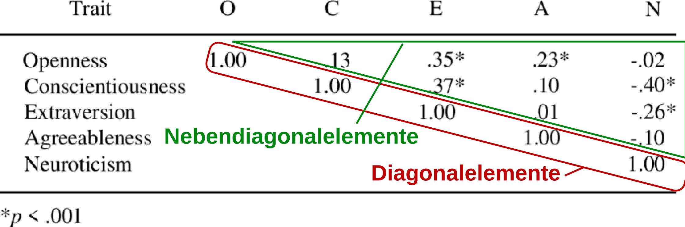
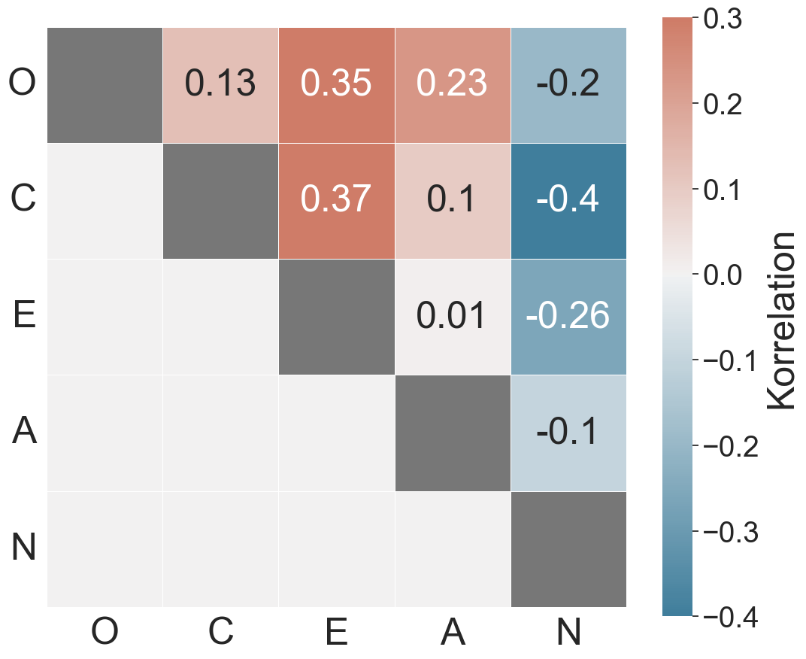
- Die Nebendiagonalelemente sind der interessante Teil der Korrelationsmatrix, sie geben die Korrelationen verschiedener Variablen an
- Die Diagonalelemente, also die Korrelationen von Variablen mit sich selbst, sind immer 1
Kovarianzmatrix
- Eine analoge Matrix-Darstellung gibt es auch für die Kovarianz
- Im Unterschied zur Korrelationsmatrix sind die Diagonalelemente der Kovarianzmatrix nicht 1, sondern geben die Varianz der Variable an.
- Sei \(\mathbf{X}\) (beachte Fettschrift) ein Vektor von \(n\) Variablen \(X_1 .. X_n\), so ist die zugehörige Kovarianzematrix \(\operatorname{Cov}(\mathbf{X})\):
\[ \small{ \begin{aligned} \operatorname{Cov}(\mathbf{X}) & = \begin{pmatrix}\operatorname{Var}(X_1) & \operatorname{Cov}(X_1,X_2) & \cdots & \operatorname{Cov}(X_1,X_n) \\ \\ \operatorname{Cov}(X_2,X_1) & \operatorname{Var}(X_2) & \cdots & \operatorname{Cov}(X_2,X_n) \\ \\ \vdots & \vdots & \ddots & \vdots \\ \\ \operatorname{Cov}(X_n,X_1) & \operatorname{Cov}(X_n,X_2) & \cdots & \operatorname{Var}(X_n) \end{pmatrix} \end{aligned} } \]
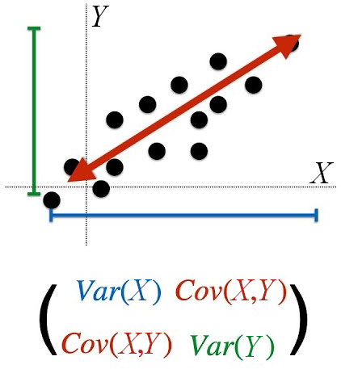
- Im Gegensatz zur Korrelationsmatrix ist die Kovarianzmatrix selten das “Endprodukt” einer Analyse, sondern meist ein Zwischenschritt in fortgeschritteneren statistischen Analysen wie der Hauptkomponentenanalyse
7 Rangkorrelationen
Was ist eine Rangkorrelation?
- Rangkorrelationsmaße ermöglichen es, Zusammenhänge von ordinalskalierten und nicht-linearen Variablem zu untersuchen.
- Dies ist mit der Pearson-Korrelation nicht möglich
- “Rang” bezieht sich auf das Ordinalskalenniveau, d.h. dass die Daten nur als “Rang” oder “Reihenfolge” interpretiert werden können.
- Im Gegensatz zur Pearson-Korrelation bewerten Rangkorrelationen nicht die Linearität eines Zusammenhangs, sondern die Monotonie des Zusammmenhangs.
- Ein weiterer Anwendungsfall sind intervallskalierte Daten, die Ausreißer aufweisen und daher die Pearson-Korrelation verzerren.
- Rangkorrelationen sind robust gegenüber Ausreißern
- In diesem Fall werden die Variablen künstlich in Ränge umgewandelt.
- Hier behandeln wir zwei Maße für die Rangkorrelation:
- Spearman-Korrelation
- Kendall’sches Tau
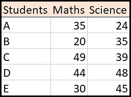
Berechnung von Rängen
- Liegen die Variablen nicht als Ränge vor, müssen sie zunächst in Ränge umgewandelt werden:
- Werte der Variable sortieren
- (Unnormierte) Ränge zuordnen
- Normierung: Gleiche Werte erhalten den Mittelwert ihrer Ränge
- (Optional) Variablen in ihre ursprüngliche Reihenfolge bringen
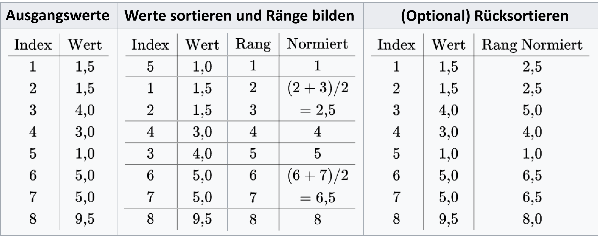
- Die Tabelle gibt die Rangberechnung einer Variablen an (z.B. X) – für die andere Variable (Y) muss das analoge Prozedere durchgeführt werden.
Spearman-Korrelation
- Die Spearman-Korrelation ist identisch zur Pearson-Korrelation, wenn die Variablen \(X\) und \(Y\) als Ränge \(R(X)\) und \(R(Y)\) vorliegen (Spearman wird häufig mit dem Buchstaben \(\rho\) bezeichnet):
\[ \rho_{XY} = \frac{cov(R(X),R(Y))}{s_{R(X)} s_{R(Y)}} \] wobei \(s_{R(X)}\) und \(s_{R(Y)}\) die Standardabweichungen der Ränge von \(X\) und \(Y\) sind.
- Wie die Pearson-Korrelation nimmt die Spearman-Korrelation Werte zwischen \(-1\) und \(+1\) an:
- Ein positiver Wert impliziert eine positiven monotonen Zusammenhang
- Ein negativer Wert impliziert eine negativen monotonen Zusammenhang
- Ein Wert nahe bei 0 impliziert einen schwachen (oder keinen) monotonen Zusammenhang
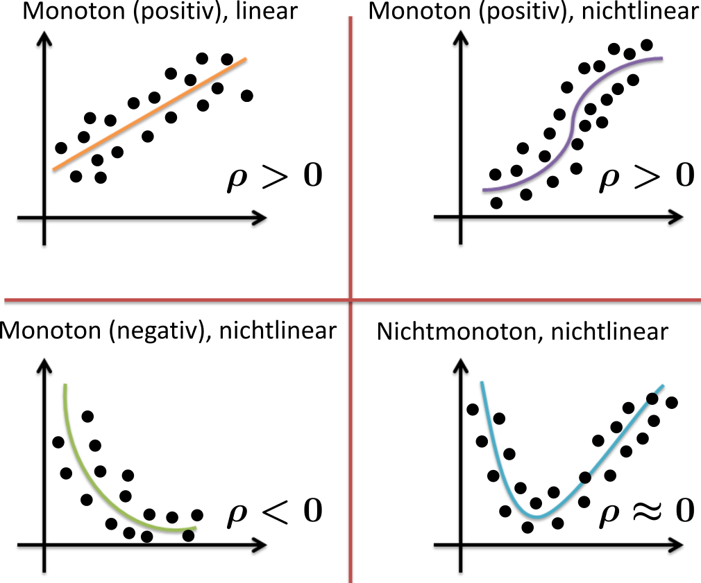
Kendalls Tau
- Eine Alternative Rangkorrelation zu Spearman ist Kendalls Tau
- Kendalls Tau vergleicht inwieweit die Rangfolge aller Paare \(x_i\), \(x_j\) mit der Rangfolge aller Paare \(y_i\), \(y_j\) übereinstimmt
- Dazu wird die Zahl der konkordanten (übereinstimmenden) und diskordanten (nicht übereinstimmenden) Paare gezählt
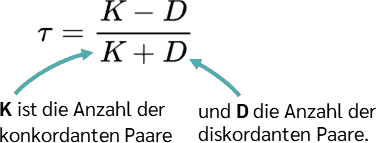
Beispiel
\[ \small{ X=\begin{pmatrix} 9\\ 3\\ 7\\ 5 \end{pmatrix} Y=\begin{pmatrix} 18\\ 7\\ 8\\ 21 \end{pmatrix} } \]
- Die Paare von X sind: \(\small{(9, 3), (9, 7), (9, 5), (3, 7), (3, 5), (7, 5)}\)
- Die Paare von Y sind: \(\small{(18, 7), (18, 8), (18, 21), (7, 8), (7, 21), (8, 21)}\)
- Die Paare \((x_1=9, x_3=7)\) und \((y_1=18, y_3=2)\) wären konkordant, da die Rangfolge des X-Paares (\(x_1 > x_3\)) gleich der Rangfolge des entsprechenden Y-Paares (\(y_1 > y_3\)) ist
- Die Paare\((x_1=9, x_4=5)\) und \((y_1=18, y_4=21)\) wären diskonkordant, da die Rangfolge des X-Paares (\(x_1 > x_4\)) ungleich der Rangfolge des entsprechenden Y-Paares (\(y_1 < y_4\)) ist
Insgesamt gibt es im Beispiel 4 konkordante Paare und 2 diskordante Paare (prüfe nach!), daher gilt:
\[ \tau = \frac{K-D}{K+D} = \frac{4-2}{3+3} = \frac{2}{6} = 0.333.. \]
Rangkorrelationen: Robust gegen Ausreißer
- Beispiel Pearson vs. Spearman:
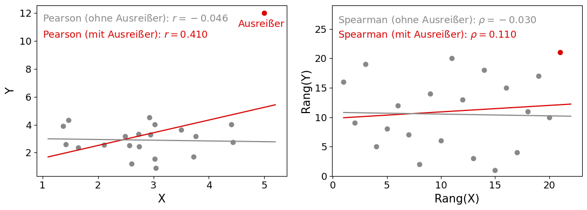
- Ein einziger Ausreißer verändert die Pearson-Korrelation im Beispiel von \(r=-0.046\) nach \(r=0.410\)
- Demgegnüber ist die Spearman-Korrelation “robuster” gegenüber dem Ausreißer – sie verändert sich “lediglich” von \(\rho=-0.030\) nach \(\rho=0.110\).
- Intution: während der Wert es Ausreißers deutlich über dem zweithöchsten Y-Wert liegt, ist der Rang nur um 1 höher.
Wann Spearman und wann Kendall?
- Beide Rangkorrelationskoeffizienten bestimmen die Monotonie eines Zusammenhangs
- Kendall ist robuster bei kleinen Stichproben und ist in diesen Fällen bevorzugt
- Spearman ist etwas weniger sensitiv gegenüber Rangbindungen (also wenn zwei Werte den gleichen Rang haben) und ist daher bevorzugt, wenn es viele Rangbindungen gibt2
- Beachte: auch bei den Kendall’schen Paaren gibt es Rangbindungen, und zwar dann, wenn die verglichenen Paare zwischen \(X\) und \(Y\) genau identisch sind
- Diese Paare sind weder konkordant noch diskordant und es gibt verschiedene Algorithmen diese Fälle zu berücksichtigen (hier nicht behandelt)
- In Abwesenheit von Rangbindungen liefert Kendall präzisere Schätzungen und ist Kendall zu bevorzugen.3
- In der Statistik wird Kendall häufig als “Default”-Rangkorrelation empfohlen4:
- idR präzisere Schätzung des Populationsparameters
- Standardfehler ist bekannt (für Spearman gibt es lediglich Approximationen5)
- Faktisch ist aber Spearman der weitaus verbreitetere Korrelationskoeffizient –
womöglich weil er idR größer als der Kendall-Koeffizient ist 😉
Der Phi-Koeffizient
- Spezialfall: beide Variablen haben nur zwei Ausprägungen
- Darstellbar in der Vierfeldertafel:
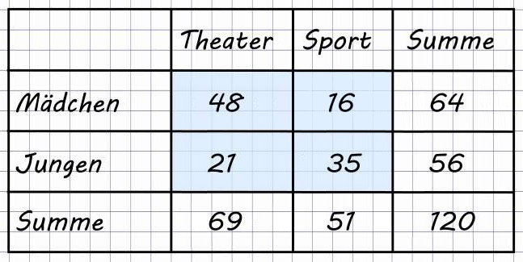
- In die vier Felder werden die Häufigkeiten der jeweiligen Variablen-Kombination eingetragen (im Beispiel blaugefärbt)
- Optional: In der letzten Zeile/Spalte die Summe
- Wie alle Korrelationskoeffizienten beantwortet der Phi-Koeffizient die Frage, ob zwei Variablen miteinander zusammenhängen
- Im Beispiel: hängt das gewählte Fach vom Geschlecht ab?
\[ \small{ \text{Formel:}\quad Phi = \frac{ad-bc}{\sqrt{(a+b)(c+d)(a+c)(b+d)}} } \]
- Auch der Phi-Koeffizient hat einen Wertebereich von \([-1; 1]\)
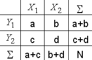
- NB: der Phi-Koeffizient ist identisch mit der Pearson-Korrelation und der Spearman-Korrelation, wenn beide dichotomen Variablen mit 0 und 1 kodiert werden.
Phi-Koeffizient: Beispiel
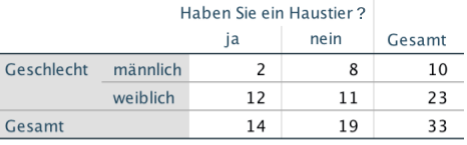
\[\begin{align} Phi &= \frac{ad-bc}{\sqrt{(a+b)(c+d)(a+c)(b+d)}} = \\ &= \frac{2\cdot11-8\cdot12}{\sqrt{(2+8)(12+11)(2+12)(8+11)}} = \\ &= \frac{22-96}{\sqrt{10\cdot23\cdot14\cdot19}} = \frac{-74}{\sqrt{61180}} = -0.299 \end{align}\]
8 Interpretation von Korrelationen
Korrelation und Kausalität
- Rein rechnerisch bedeutet eine Korrelation einen Zusammenhang zweier Variablen, sogar, dass man die eine Variable aus der anderen statistisch vorhersagen kann
- Dies bedeutet jedoch nicht, dass sich die Variablen auch kausal bedingen
- Einerseits können Korrelation zufällig zustande kommen (die Wahrscheinlichkeit von solchen irrtümlichen Befunden untersuchen wir noch genauer beim Thema Signifikanztestung)
- .. andererseits könen Korrelationen durch dritte Variablen (Störvariablen) verursacht sein.
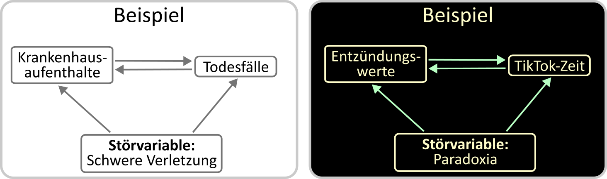
Korrelation und Kausalität
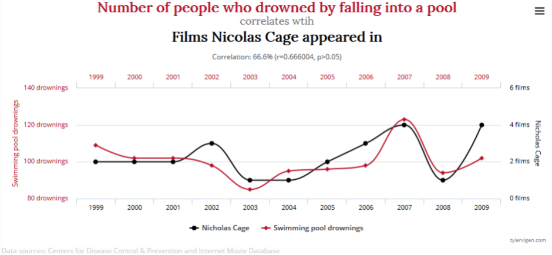
Korrelation und Kausalität
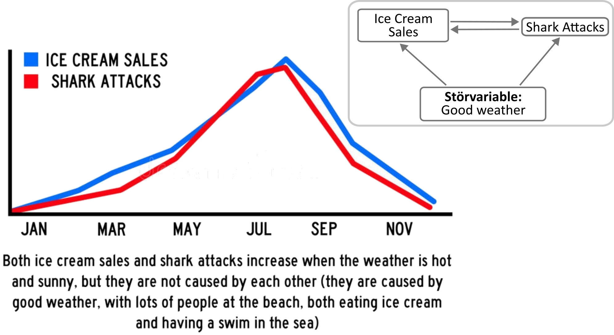
Wann ist ein Korrelationskoeffizient groß oder klein?
- Pauschal schwer zu beantworten
- In der psychologischen Literatur hat sich folgende Nomenklatur nach Jacob Cohen7 eingebürgert:
| Korrelation (r) | Nomenklatur |
|---|---|
| 0.1-0.29 | “kleiner” Effekt |
| 0.3-0.49 | “mittlerer” Effekt |
| 0.5-1 | “großer” Effekt |
- Allerdings fügt Cohen im gleichen Artikel hinzu:
These proposed conventions were set forth throughout with much diffidence [Zurückhaltung], qualifications [Bedingungen], and invitations not to employ them if possible.
- Bei der Beurteilung sollte der Korrelationskoeffizient, wie jede Effektgröße, immer in Relation zu typischen Werten im jeweiligen Forschungsfeld gesetzt werden.
Wann ist ein Korrelationskoeffizient groß oder klein?
- In einer kürzlichen Metaanalyse von Lovakov Agadullina (2021)8 wurden typische Effektstärken in der Sozialpsychologie untersucht:
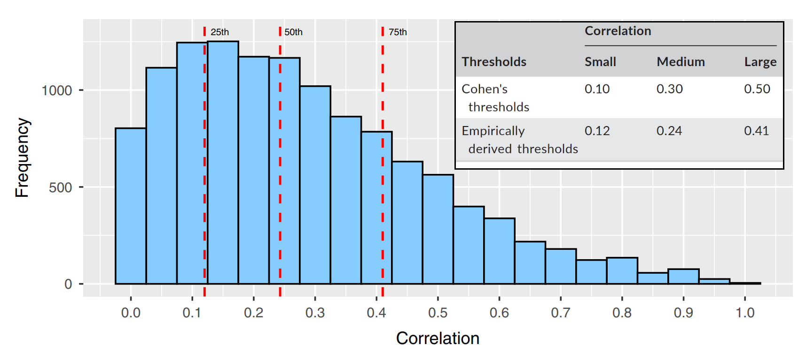
- Erkenntnis: “mittlere” und “starke” Korrelationen (definiert als das 50%- und 75%- Quantil)
sind in der Realität kleiner als von Cohen angenommen
- Zusammenhänge werden mit Kovarianz und Korrelation untersucht
- Die Kovarianz ist die Basis der Pearson-Korrelation – aber sie ist abhängig von den gewählten Einheiten
- Die Pearson-Korrelation misst die Linearität eines Zusammenhangs und gilt für intervallskalierte Daten
- Für ordinalskalierte Variablen eignen sich Rangkorrelationen: Spearmans Rho und Kendalls Tau – sie messen die Monotonie eines Zusammenhangs
- Sind beide Variablen dichotom, greift der Phi-Koeffizient
- Correlation does not imply causation, Correlation does not imply causation, Correlation does not imply causation, Correlation does not